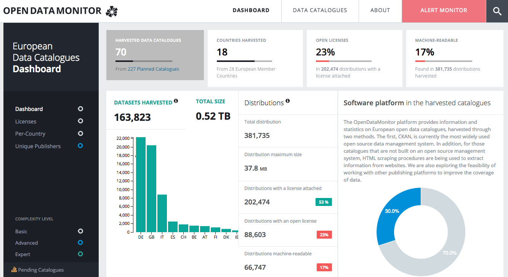

New support for European entrepreneurs to access quality open data

Open data can be applied to bring social, economic and environmental benefits around the world. It can improve efficiencies in business, reveal opportunities to improve public services and give insights into how technology and infrastructure work best for the people that use them.
The OpenDataMonitor platform, an EU funded project to raise the quality of open data across Europe, launches today in alpha. The platform has been developed by the Open Data Institute and six partners across Europe.
OpenDataMonitor will:
- support entrepreneurs looking for reusable data with which to create new services;
- show open data owners what high-quality open data looks like;
- enable policy makers to better understand how other cities, regions and countries are adopting open data and the impact it is having;
- and enable researchers to gain insight into open data publishing patterns.
Through focusing on specific metrics, such as the percentage of datasets with open licenses, all datasets and supporting metadata will improve.
Today’s launch comes after a year of research and development by the project team. OpenDataMonitor will harvest and analyse open data from sources or ‘catalogues’ across Europe. These include major national data hubs (such as data.gov.uk) as well as regional and local hubs. This data exploration tool has been created to provide a benchmark for open data resources in Europe. It will provide key insights into how the open data ecosystem is developing, and give detailed information about datasets and catalogues for entrepreneurs, investors, policy-makers and open data publishers and consumers.
The data, set against specific metrics will provide users with personalised dashboards and information, allowing them to compare open data catalogues at both national and local levels. These metrics include:
- total number of catalogues harvested
- total number of countries harvested
- percentage of datasets with open licenses
- percentage of datasets that are machine readable
- software platform used
- and number of unique publishers.
To date, the project has collected data from over 70 catalogues across Europe. The platform will be continuously developed and improved throughout 2015, with further catalogues harvested and additional graphs, features and functionality made available to users. The project is due to be completed by November 2015. A timeline outlining dates for future improvements can be found on the website (link)
OpenDataMonitor is co-funded by the European Commission as part of the seventh framework programme for research and technological development (FP7). Co-ordinated by SYNYO, it has been developed with the Open Data Institute, The University of Southampton, Athena Research and Innovation Center and the Potsdam Institute for eGovernment (IFG.CC). Red.es and the City of Munich will provide real-life use cases to measure the success of the project against.
Get involved Support us in understanding how we can better develop the OpenDataMonitor platform to meet your needs.
- Share with us your suggestions and feedback here
- Sign up for our OpenDataMonitor newsletter and receive regular updates on the project and how the wider open data ecosystem is developing
- Follow our Twitter account
- Have a tinker with our Github repository